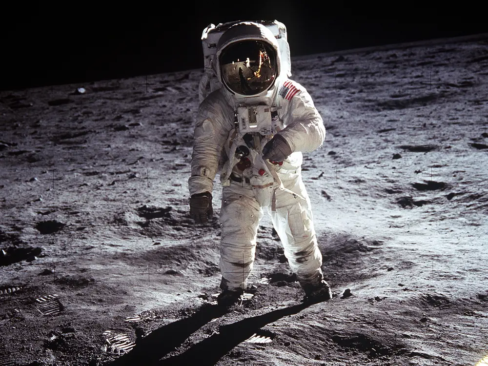
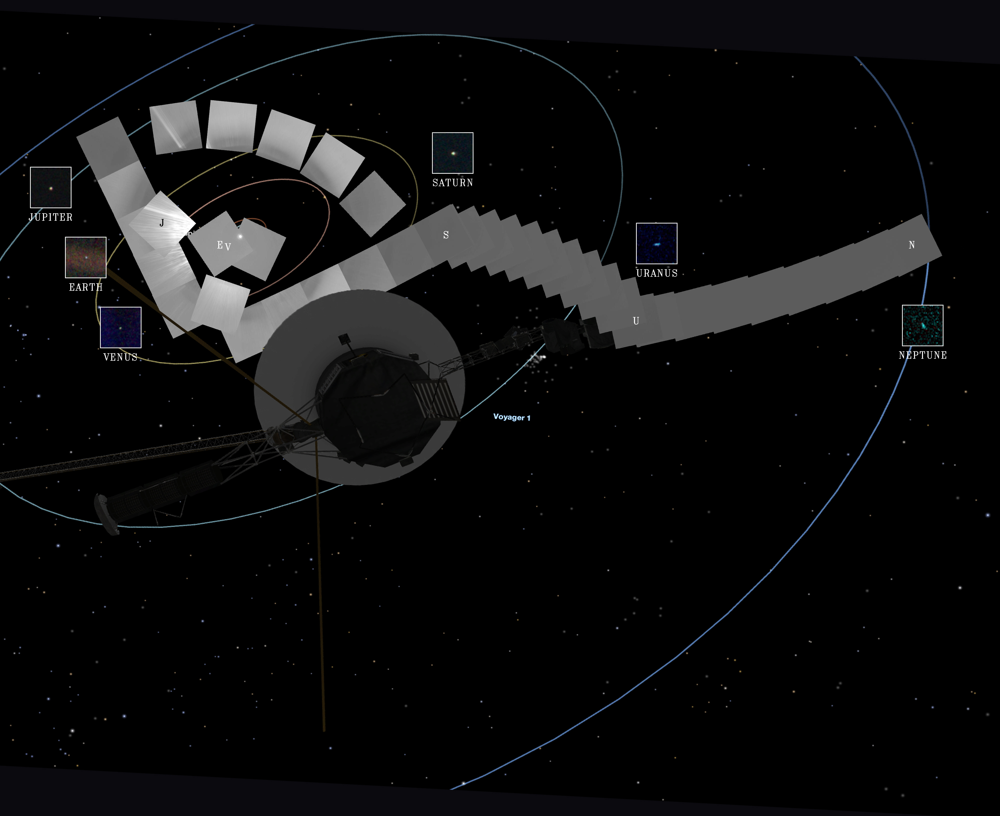
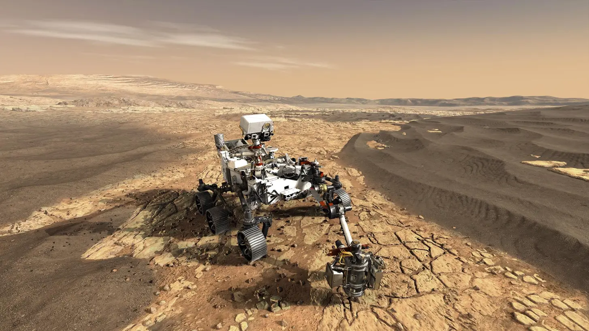

Famous Missions
Humanity's greatest steps into the cosmos.
Apollo 11: The Moon Landing
The Apollo 11 mission, launched on July 16, 1969, was the spaceflight that first landed humans on the Moon. Commander Neil Armstrong and lunar module pilot Buzz Aldrin formed the American crew that landed the Apollo Lunar Module "Eagle" on July 20, 1969. Armstrong became the first person to step onto the lunar surface six hours later, famously declaring, "That's one small step for man, one giant leap for mankind."
- Crew: Neil Armstrong, Buzz Aldrin, Michael Collins
- Launch Date: July 16, 1969
- Key Achievement: First crewed lunar landing and lunar walk.
- Samples Returned: 21.55 kg (47.5 lb) of lunar surface material.
The Voyager Program: Grand Tour
The Voyager program consists of two spacecraft, Voyager 1 and Voyager 2, launched in 1977. They took advantage of a rare planetary alignment to conduct a "Grand Tour" of the outer solar system. They provided unprecedented images and data on Jupiter, Saturn, Uranus, and Neptune. Both probes are now in interstellar space, carrying the Golden Record, a message-in-a-bottle for any extraterrestrial intelligence that might find them.
- Voyager 1: Studied Jupiter and Saturn. Now the most distant human-made object.
- Voyager 2: Studied Jupiter, Saturn, Uranus, and Neptune. The only probe to have visited the ice giants.
- Current Status: Both probes are in interstellar space and still transmitting data.
Mars Exploration Rovers
NASA's Mars Exploration Rover mission has sent multiple robotic rovers to the Red Planet. These rovers are mobile geology labs designed to search for signs of past water activity and assess the planet's past and present habitability. From the long-lived Spirit and Opportunity to the advanced Curiosity and Perseverance rovers, each mission has rewritten our understanding of Mars.
- Spirit & Opportunity (2004): Confirmed the presence of liquid water in Mars' past. Opportunity operated for over 14 years.
- Curiosity (2012): Found that ancient Mars had the chemical ingredients and persistent environmental conditions to support microbial life.
- Perseverance (2021): Currently searching for signs of ancient microbial life and collecting rock samples for a future return mission to Earth.
James Webb Space Telescope (JWST)

The James Webb Space Telescope is the largest and most powerful space telescope ever built. Launched in 2021, it is the successor to the Hubble Space Telescope. Its primary mission is to observe the universe in infrared, allowing it to see through dust clouds and gaze back to the very first stars and galaxies that formed after the Big Bang. It also studies exoplanet atmospheres, searching for the building blocks of life.
- Launch Date: December 25, 2021
- Optics: 6.5-meter primary mirror made of 18 gold-plated beryllium segments.
- Key Goals: First light and reionization, assembly of galaxies, birth of stars, and planetary systems.